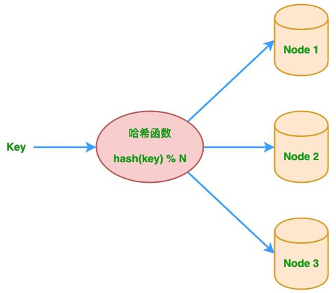
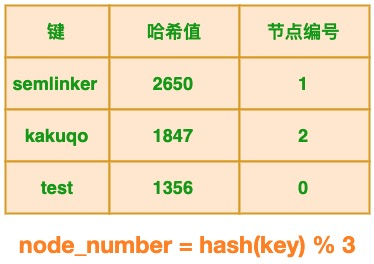
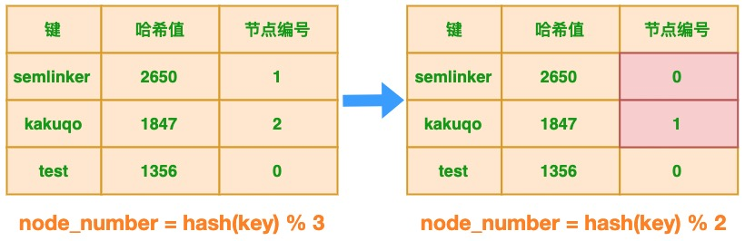
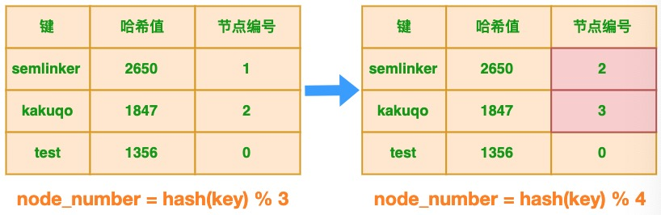
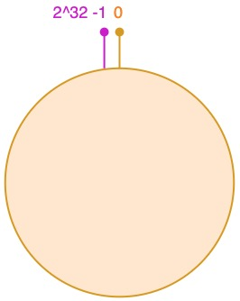
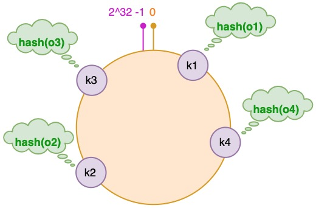
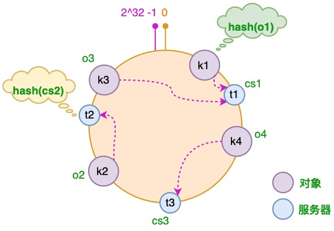
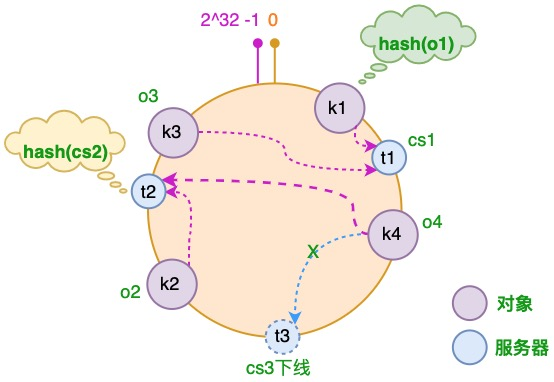
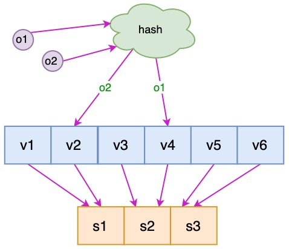

前言
要了解一致性哈希，首先我们必须了解传统的哈希及其在大规模分布式系统中的局限性。简单地说，哈希就是一个键值对存储，在给定键的情况下，可以非常高效地找到所关联的值。假设我们要根据其邮政编码查找城市中的街道名称。一种最简单的实现方式是将此信息以哈希字典的形式进行存储 <Zip Code，Street Name>。
当数据太大而无法存储在一个节点或机器上时，问题变得更加有趣，系统中需要多个这样的节点或机器来存储它。比如，使用多个 Web 缓存中间件的系统。那如何确定哪个 key 存储在哪个节点上？针对该问题，最简单的解决方案是使用哈希取模来确定。 给定一个 key，先对 key 进行哈希运算，将其除以系统中的节点数，然后将该 key 放入该节点。同样，在获取 key 时，对 key 进行哈希运算，再除以节点数，然后转到该节点并获取值。上述过程对应的哈希算法定义如下：
1 | node_number = hash(key) % N # 其中 N 为节点数。 |
下图描绘了多节点系统中的传统的哈希取模算法，基于该算法可以实现简单的负载均衡。

一、传统哈希取模算法的局限性
下面我们来分析一下传统的哈希及其在大规模分布式系统中的局限性。这里我们直接使用我之前所写文章 布隆过滤器你值得拥有的开发利器 中定义的 SimpleHash 类，然后分别对 semlinker、kakuqo 和 test 3 个键进行哈希运算并取余，具体代码如下：
1 | public class SimpleHash { |
以上代码成功运行后，在控制台会输出以下结果：
1 | node_number=hash("semlinker") % 3 -> 1 |
基于以上的输出结果，我们可以创建以下表格：

1.1 节点减少的场景
在分布式多节点系统中，出现故障很常见。任何节点都可能在没有任何事先通知的情况下挂掉，针对这种情况我们期望系统只是出现性能降低，正常的功能不会受到影响。 对于原始示例，当节点出现故障时会发生什么？原始示例中有的 3 个节点，假设其中 1 个节点出现故障，这时节点数发生了变化，节点个数从 3 减少为 2，此时表格的状态发生了变化：

很明显节点的减少会导致键与节点的映射关系发生变化，这个变化对于新的键来说并不会产生任何影响，但对于已有的键来说，将导致节点映射错误，以 “semlinker” 为例，变化前系统有 3 个节点，该键对应的节点编号为 1，当出现故障时，节点数减少为 2 个，此时该键对应的节点编号为 0。
1.2 节点增加的场景
在分布式多节点系统中，对于某些场景比如节日大促，就需要对服务节点进行扩容，以应对突发的流量。 对于原始示例，当增加节点会发生什么？原始示例中有的 3 个节点，假设进行扩容临时增加了 1 个节点，这时节点数发生了变化，节点个数从 3 增加为 4 个，此时表格的状态发生了变化：

很明显节点的增加也会导致键与节点的映射关系发生变化，这个变化对于新的键来说并不会产生任何影响，但对于已有的键来说，将导致节点映射错误，同样以 “semlinker” 为例，变化前系统有 3 个节点，该键对应的节点编号为 1，当增加节点时，节点数增加为 4 个，此时该键对应的节点编号为 2。
当集群中节点的数量发生变化时，之前的映射规则就可能发生变化。如果集群中每个机器提供的服务没有差别，这不会有什么影响。但对于分布式缓存这种的系统而言，映射规则失效就意味着之前缓存的失效，若同一时刻出现大量的缓存失效，则可能会出现 “缓存雪崩”，这将会造成灾难性的后果。
要解决此问题，我们必须在其余节点上重新分配所有现有键，这可能是非常昂贵的操作，并且可能对正在运行的系统产生不利影响。当然除了重新分配所有现有键的方案之外，还有另一种更好的方案即使用一致性哈希算法。
二、一致性哈希算法
一致性哈希算法在 1997 年由麻省理工学院提出，是一种特殊的哈希算法，在移除或者添加一个服务器时，能够尽可能小地改变已存在的服务请求与处理请求服务器之间的映射关系。一致性哈希解决了简单哈希算法在分布式哈希表（Distributed Hash Table，DHT）中存在的动态伸缩等问题 。
2.1 一致性哈希算法优点
可扩展性。一致性哈希算法保证了增加或减少服务器时，数据存储的改变最少，相比传统哈希算法大大节省了数据移动的开销 。
更好地适应数据的快速增长。采用一致性哈希算法分布数据，当数据不断增长时，部分虚拟节点中可能包含很多数据、造成数据在虚拟节点上分布不均衡，此时可以将包含数据多的虚拟节点分裂，这种分裂仅仅是将原有的虚拟节点一分为二、不需要对全部的数据进行重新哈希和划分。
虚拟节点分裂后，如果物理服务器的负载仍然不均衡，只需在服务器之间调整部分虚拟节点的存储分布。这样可以随数据的增长而动态的扩展物理服务器的数量，且代价远比传统哈希算法重新分布所有数据要小很多。
2.2 一致性哈希算法与哈希算法的关系
一致性哈希算法是在哈希算法基础上提出的，在动态变化的分布式环境中，哈希算法应该满足的几个条件：平衡性、单调性和分散性。
- 平衡性：是指 hash 的结果应该平均分配到各个节点，这样从算法上解决了负载均衡问题。
- 单调性：是指在新增或者删减节点时，不影响系统正常运行。
- 分散性：是指数据应该分散地存放在分布式集群中的各个节点（节点自己可以有备份），不必每个节点都存储所有的数据。
三、一致性哈希算法原理
一致性哈希算法通过一个叫作一致性哈希环的数据结构实现。这个环的起点是 0，终点是 2^32 - 1，并且起点与终点连接，故这个环的整数分布范围是 [0, 2^32-1]，如下图所示：

3.1 将对象放置到哈希环
假设我们有 “semlinker”、”kakuqo”、”lolo”、”fer” 四个对象，分别简写为 o1、o2、o3 和 o4，然后使用哈希函数计算这个对象的 hash 值，值的范围是 [0, 2^32-1]：

图中对象的映射关系如下：
1 | hash(o1) = k1; hash(o2) = k2; |
3.2 将服务器放置到哈希环
接着使用同样的哈希函数，我们将服务器也放置到哈希环上，可以选择服务器的 IP 或主机名作为键进行哈希，这样每台服务器就能确定其在哈希环上的位置。这里假设我们有 3 台缓存服务器，分别为 cs1、cs2 和 cs3：

图中服务器的映射关系如下：
1 | hash(cs1) = t1; hash(cs2) = t2; hash(cs3) = t3; # Cache Server |
3.3 为对象选择服务器
将对象和服务器都放置到同一个哈希环后，在哈希环上顺时针查找距离这个对象的 hash 值最近的机器，即是这个对象所属的机器。以 o2 对象为例，顺序针找到最近的机器是 cs2，故服务器 cs2 会缓存 o2 对象。而服务器 cs1 则缓存 o1，o3 对象，服务器 cs3 则缓存 o4 对象。

3.4 服务器增加的情况
假设由于业务需要，我们需要增加一台服务器 cs4，经过同样的 hash 运算，该服务器最终落于 t1 和 t2 服务器之间，具体如下图所示：

对于上述的情况，只有 t1 和 t2 服务器之间的对象需要重新分配。在以上示例中只有 o3 对象需要重新分配，即它被重新到 cs4 服务器。在前面我们已经分析过，如果使用简单的取模方法，当新添加服务器时可能会导致大部分缓存失效，而使用一致性哈希算法后，这种情况得到了较大的改善，因为只有少部分对象需要重新分配。
3.5 服务器减少的情况
假设 cs3 服务器出现故障导致服务下线，这时原本存储于 cs3 服务器的对象 o4，需要被重新分配至 cs2 服务器，其它对象仍存储在原有的机器上。

3.6 虚拟节点
到这里一致性哈希的基本原理已经介绍完了，但对于新增服务器的情况还存在一些问题。新增的服务器 cs4 只分担了 cs1 服务器的负载，服务器 cs2 和 cs3 并没有因为 cs4 服务器的加入而减少负载压力。如果 cs4 服务器的性能与原有服务器的性能一致甚至可能更高，那么这种结果并不是我们所期望的。
针对这个问题，我们可以通过引入虚拟节点来解决负载不均衡的问题。即将每台物理服务器虚拟为一组虚拟服务器，将虚拟服务器放置到哈希环上，如果要确定对象的服务器，需先确定对象的虚拟服务器，再由虚拟服务器确定物理服务器。

图中 o1 和 o2 表示对象，v1 ~ v6 表示虚拟服务器，s1 ~ s3 表示物理服务器。
四、一致性哈希算法实现
这里我们只介绍不带虚拟节点的一致性哈希算法实现：
1 | import java.util.SortedMap; |
以上代码成功运行后，在控制台会输出以下结果：
1 | [192.168.0.1:8888]加入集合中, 其Hash值为1326271016 |
上面我们只介绍了不带虚拟节点的一致性哈希算法实现，如果有的小伙伴对带虚拟节点的一致性哈希算法感兴趣，可以参考 一致性Hash(Consistent Hashing)原理剖析及Java实现 这篇文章。
五、总结
本文通过示例介绍了传统的哈希取模算法在分布式系统中的局限性，进而在针对该问题的解决方案中引出了一致性哈希算法。一致性哈希算法在 1997 年由麻省理工学院提出，是一种特殊的哈希算法，在移除或者添加一个服务器时，能够尽可能小地改变已存在的服务请求与处理请求服务器之间的映射关系。在介绍完一致性哈希算法的作用和优点等相关知识后，我们以图解的形式生动介绍了一致性哈希算法的原理，最后给出了不带虚拟节点的一致性哈希算法的 Java 实现。

...
...
This is copyright.